- Anime - Crunchyroll - Anime - Crunchyroll - Anime - Crunchyroll - Anime - Crunchyroll - Anime - Crunchyroll - Anime - Crunchyroll - Anime - Crunchyroll - Anime - Crunchyroll - Anime - Crunchyroll - Anime - Crunchyroll - Anime - Crunchyroll - Anime - Crunchyroll - Anime - Crunchyroll - Anime - Crunchyroll - Anime - Crunchyroll - Anime - Crunchyroll - Anime - Crunchyroll - Anime - Crunchyroll - Anime - Crunchyroll - Anime - Crunchyroll - Anime - Crunchyroll - Anime - Crunchyroll - Anime - Crunchyroll - Anime - Crunchyroll - Anime - Crunchyroll - Anime - Crunchyroll - Anime - Crunchyroll - Anime - Crunchyroll - Anime - Crunchyroll - Anime - Crunchyroll - Anime - Crunchyroll - Anime - Crunchyroll - Anime - Crunchyroll - Anime - Crunchyroll - Anime - Crunchyroll - Anime - Crunchyroll - Anime - Crunchyroll - Anime - Crunchyroll - Anime - Crunchyroll - Anime - Crunchyroll - Anime - Crunchyroll - Anime - Crunchyroll - Anime - Crunchyroll - Anime - Crunchyroll - Anime - Crunchyroll - Anime - Crunchyroll - Anime - Crunchyroll - Anime - Crunchyroll - Anime - Crunchyroll - Anime - Crunchyroll - Anime - Crunchyroll - Anime - Crunchyroll - Anime - Crunchyroll - Anime - Crunchyroll
Crunchyroll
Crunchyroll is een populaire streamingdienst die zich volledig richt op anime, manga en Aziatische series. Je kunt er zowel klassiekers als nieuwe series bijna gelijktijdig met Japan bekijken. De dienst biedt gratis kijken met advertenties of betaalde abonnementen met extra voordelen zoals HD-kwaliteit, simulcasts en offline kijken.
Ik gebruik Crunchyroll nu al bijna een jaar, ik vind het een goede manier om Anime te kijken. De leukste series staan er bijna altijd op :)
Crunchyroll InformatieHieronder staat een lijst van animes die ik heb gekeken. Niet alles past op de website, dus ik heb de beste gekozen.

- Anime - Crunchyroll - Anime - Crunchyroll - Anime - Crunchyroll - Anime - Crunchyroll - Anime - Crunchyroll - Anime - Crunchyroll - Anime - Crunchyroll - Anime - Crunchyroll - Anime - Crunchyroll - Anime - Crunchyroll - Anime - Crunchyroll - Anime - Crunchyroll - Anime - Crunchyroll - Anime - Crunchyroll - Anime - Crunchyroll - Anime - Crunchyroll - Anime - Crunchyroll - Anime - Crunchyroll - Anime - Crunchyroll - Anime - Crunchyroll - Anime - Crunchyroll - Anime - Crunchyroll - Anime - Crunchyroll - Anime - Crunchyroll - Anime - Crunchyroll - Anime - Crunchyroll - Anime - Crunchyroll - Anime - Crunchyroll - Anime - Crunchyroll - Anime - Crunchyroll - Anime - Crunchyroll - Anime - Crunchyroll - Anime - Crunchyroll - Anime - Crunchyroll - Anime - Crunchyroll - Anime - Crunchyroll - Anime - Crunchyroll - Anime - Crunchyroll - Anime - Crunchyroll - Anime - Crunchyroll - Anime - Crunchyroll - Anime - Crunchyroll - Anime - Crunchyroll - Anime - Crunchyroll - Anime - Crunchyroll - Anime - Crunchyroll - Anime - Crunchyroll - Anime - Crunchyroll - Anime - Crunchyroll - Anime - Crunchyroll - Anime - Crunchyroll - Anime - Crunchyroll - Anime - Crunchyroll - Anime - Crunchyroll
Peak Anime Lijst:
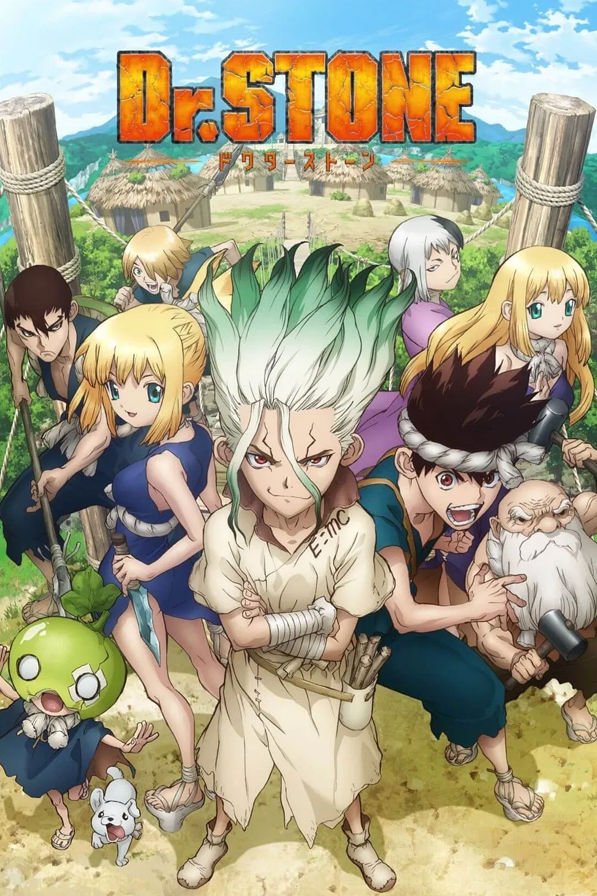
Dr Stone
Mijn rating: 10 000 000 000/10 Dr. Stone is een opwindende mix van wetenschap, humor en avontuur tegen een achtergrond van post-apocalyptische chaos. Het verhaal draait om Senku Ishigami, een vindingrijke wetenschapper die zich toelegt op het doen herleven van de beschaving vanaf het begin van de steentijd. Ik vind Drstone een geweldige serie omdat ik scheikunde/wetenschap leuk vind. Dat komt heel erg vaak terug en daarom vind ik het 10 biljoen procent leuk. Ik vind Senku ishigami ook een interessant character. Hij weet letterlijk alles. Hij telde 116,427,065,520 seconde lang terwijl hij vast zat in een steen. LIKE WAT???
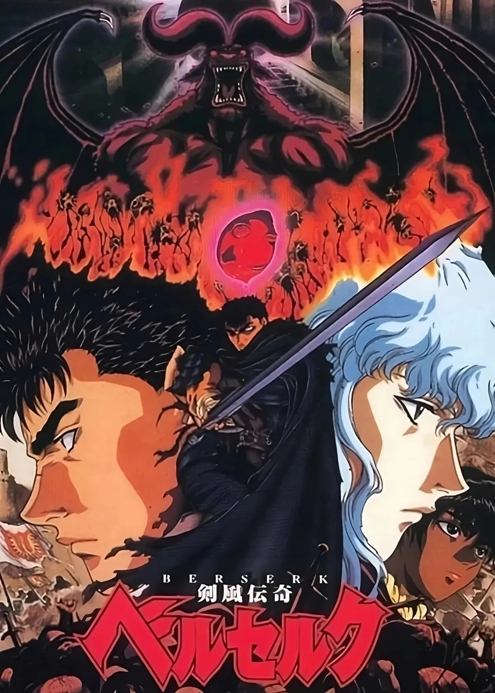
Berserk
Mijn rating: 10/10 Berserk is een dark fantasy mangaserie geschreven en geïllustreerd door Kentarō Miura. De serie volgt het verhaal van Guts, een huurling die wordt meegezogen in de wereld van de God Hand, machtige wezens die het bovennatuurlijke rijk regeren. Berserk is een van mijn favoriete animes ooit. Ik vind het verhaal van Guts prachtig. Ook over zijn vrienden die hij maakt en verliest. De gevoelens die Guts heeft voor Casca zijn prachtig. Door deze dingen vind ik het verhaal ontroerend, maar ook spannend. Daarom vind ik het juist leuk.
Solo leveling
Mijn rating: 9/10 In een wereld waar poorten naar monsterrijken verschijnen, vechten Hunters tegen de monsters die eruit komen. Sung Jin-Woo is de zwakste hunter van allemaal, totdat hij tijdens een bijna fatale missie wordt gekozen door een mysterieus “Systeem”. Hierdoor kan hij als enige ter wereld sterker worden door te trainen en te levelen, alsof hij in een videogame leeft. Terwijl Jin-Woo steeds krachtiger wordt, ontdekt hij dat er duistere mysteries schuilgaan achter de poorten, de monsters én het Systeem zelf. De fight scenes zijn peak. Hoe in-Woo dungeons vernietigd aan het einde van de serie alsof het niks is laat echt zijn character develepment zien. Je moet wel een keer solo leveling hebben gekeken als je anime leuk vindt.
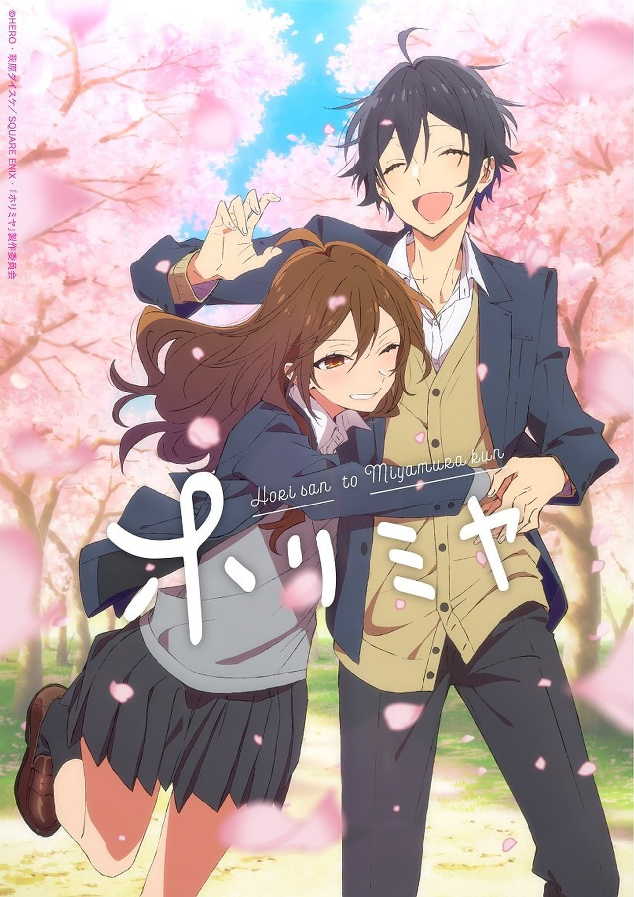
Horimiya
Mijn rating: 9/10 Horimiya vertelt het verhaal van Hori en Miyamura, twee scholieren die op school totaal verschillend lijken: Hori is populair en verantwoordelijk, terwijl Miyamura stil en onopvallend is. Buiten school ontdekken ze elkaars verborgen kanten en raken ze steeds closer. Hun vriendschap groeit uit tot een warme, grappige en oprechte relatie, terwijl ook hun vriendenkring zich ontwikkelt. Ik vind Horimiya een goede anime omdat de ontwikkelingen van de personages mooi is. Ook de animatie is geweldig. Het is een goede Romance Anime.
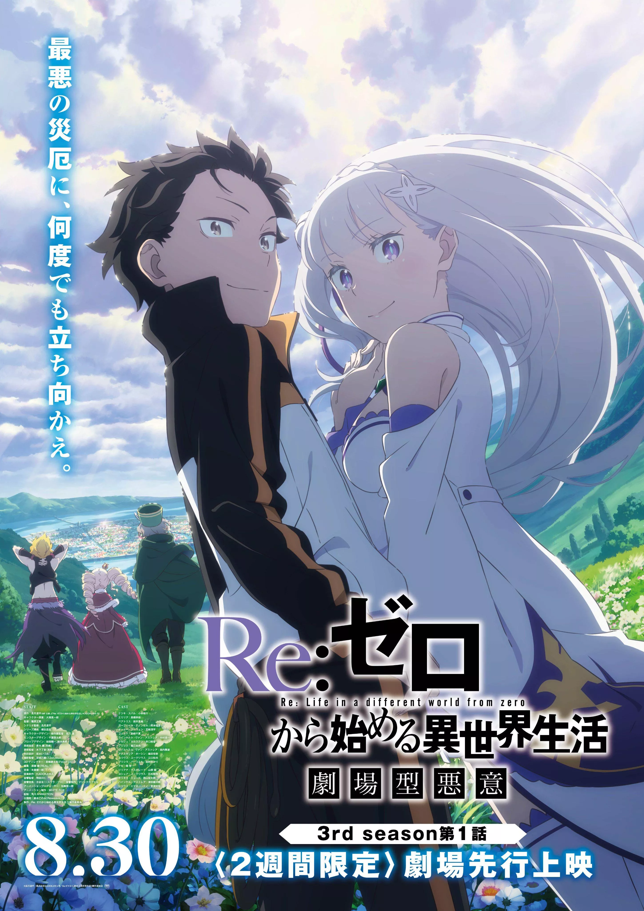
Re:Zero
Mijn rating: 11/10 Re:Zero volgt Subaru, die in een fantasywereld belandt en ontdekt dat hij na elke dood terugkeert naar een eerder moment. Hij gebruikt deze pijnlijke kracht om Emilia te beschermen en mysteries op te lossen, terwijl hij steeds weer sterft en leert hoe hij rampen kan voorkomen. Het feit dat hij in een andere wereld is gesummoned vind ik al cool, maar ook dat hij steeds opnieuw kan sterven is uniek. Het is soms wel duister maar daarom kan het juist interessant zijn.
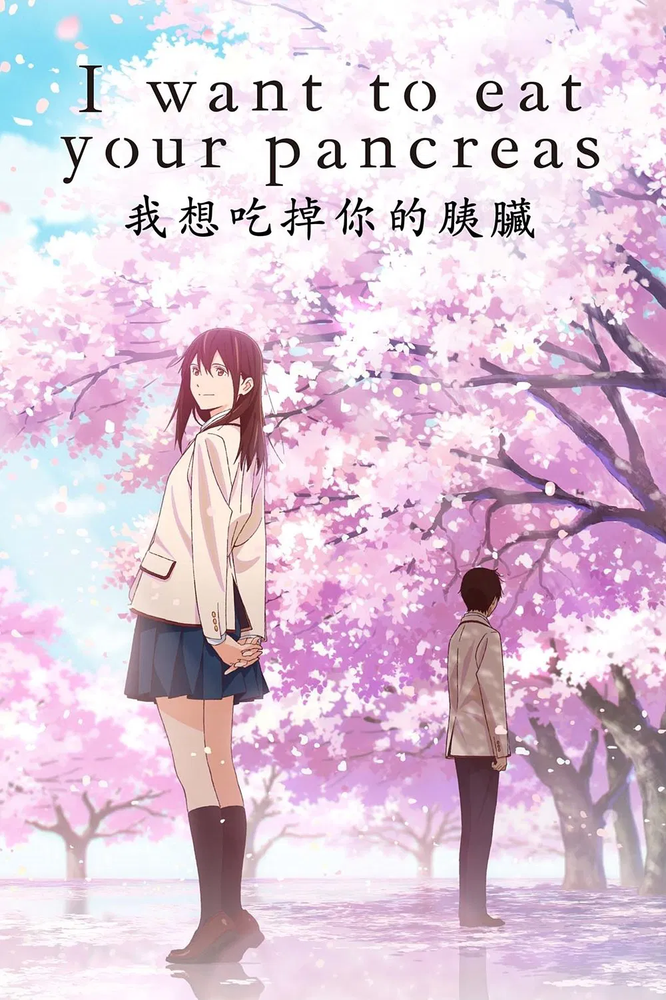
I want to eat your pancreas
Mijn rating: 10/10 Het verhaal gaat over een introverte jongen die ontdekt dat zijn populaire klasgenoot Sakura een dodelijke alvleesklierziekte heeft. Niemand anders weet dit. Ondanks hun tegengestelde persoonlijkheden groeien ze naar elkaar toe terwijl ze samen tijd doorbrengen en Sakura haar lijst met dingen die ze nog wil doen probeert af te werken. Het is een emotioneel verhaal over vriendschap, leven en verlies Het verhaal is heel erg zielig, van deze film ga je mogelijk huilen. Maar daarom is het juist een goede film.
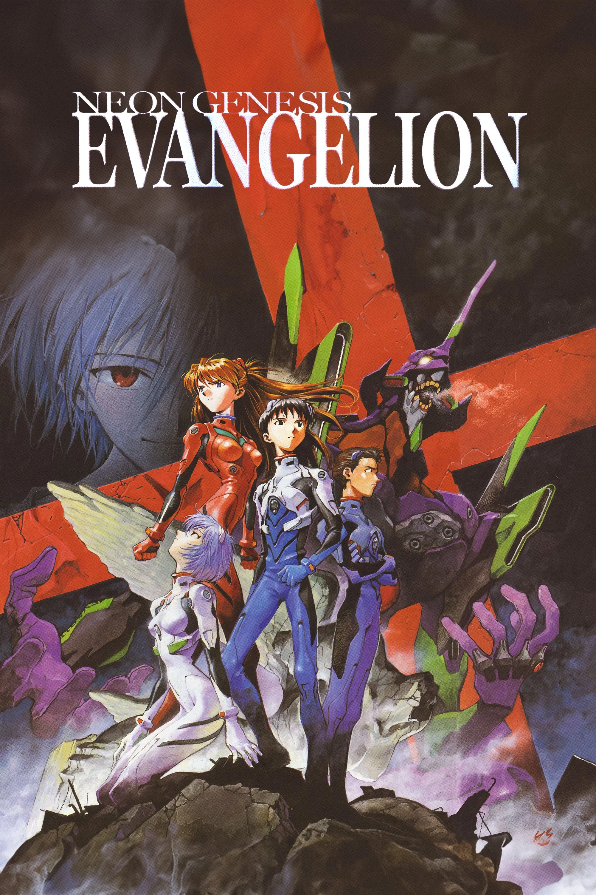
Evangelion
Mijn rating: 10/10 Neon Genesis Evangelion speelt zich af in een post-apocalyptische wereld waar tieners, waaronder Shinji Ikari, worden gerekruteerd om gigantische mecha-robots genaamd Evangelions te besturen. Hun taak is om de mensheid te verdedigen tegen mysterieuze wezens, de Angels. De serie combineert actie met diepe psychologische thema’s, zoals existentiële angst, eenzaamheid, en de zoektocht naar identiteit. Het staat bekend om zijn complexe verhaal, symboliek en emotionele diepgang. De mega robots zijn natuurlijk episch, maar ik vind de psychologische gedeeltes van anime ook altijd leuk. Evangelion heeft de balans tussen vechten en emotionele stukken perfect genomen. Dus daarom vind ik Evangelion geweldig.
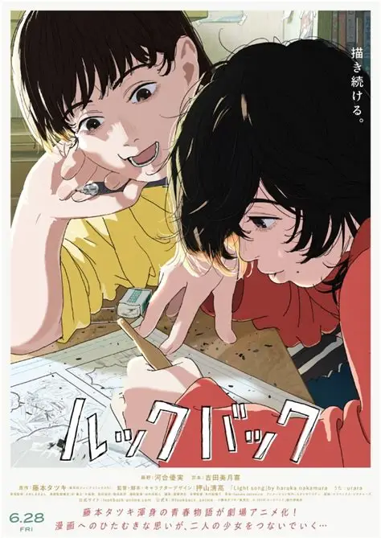
Lookback
Mijn rating: 11/10 Look Back is een ontroerende manga/anime over twee meisjes, Fujino en Kyomoto, die beiden gepassioneerd zijn over tekenen en manga maken. Ze beginnen als klasgenoten en raken bevriend door hun gedeelde hobby. Terwijl ze samen groeien als kunstenaars, komen ze voor uitdagingen te staan, zoals rivaliteit, verlies en zelfontwikkeling. Het verhaal gaat over vriendschap, ambitie en de kracht van kunst om mensen te verbinden. Het emotionele gedeelte van deze film vind ik erg ontroerend. De connectie die Fujino en Kyomoto hebben gemaakt tijdens het tekenen van manga is prachtig.
Bocchi the rock!
Mijn rating: 11/10 Bocchi the Rock! gaat over Hitori “Bocchi” Gotou, een super verlegen en sociaal onzekere middelbare scholier die droomt van een carrière in een band. Ondanks haar zenuwen wordt ze gitarist in de all-girl band Kessoku Band. De serie volgt haar ongemakkelijke maar lieve reis om haar angsten te overwinnen, vrienden te maken en plezier te hebben met muziek en haar bandgenoten. Het is een grappige en herkenbare slice-of-life anime met veel muziek en hartverwarmende momenten. Ik herken me in haar, daarom vind ik het een leuke serie. Ik wil ook een instrument spelen dus daarom vind ik het ook interessant.
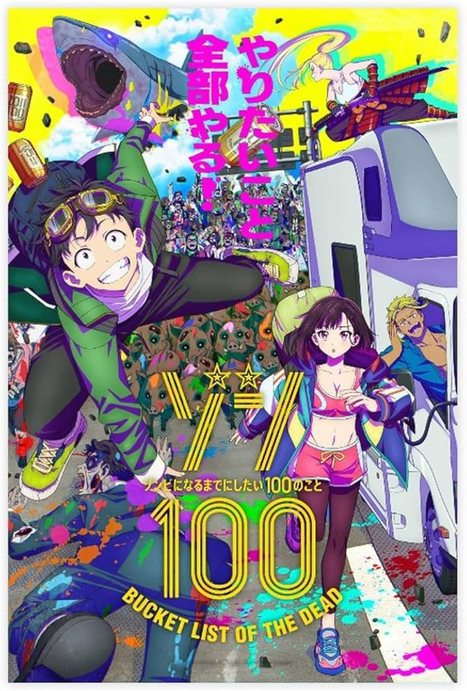
Zom:100 Bucket list of the dead
Mijn rating: 10/10 Zom 100: Bucket List of the Dead volgt Akira Tendo, een jonge werknemer die compleet is uitgeput door zijn stressvolle kantoorleven. Wanneer er plots een zombie-apocalyps uitbreekt, verwacht iedereen paniek—maar Akira voelt zich voor het eerst in lange tijd vrij. In plaats van te vluchten of te wanhopen, besluit hij een lijst te maken met 100 dingen die hij wil doen voordat hij zelf in een zombie verandert. Samen met oude en nieuwe vrienden probeert hij zijn dromen waar te maken, terwijl hij door een gevaarlijke maar onverwacht bevrijdende wereld reist. De animatie is peak. Ik vond het mooi om te zien hoe Akira Tendo ontsnapte van zijn werk waar hij mishaneld werdt. Ik had eerst niet verwacht dat er zombies zouden komen, daarom vind ik het leuk.
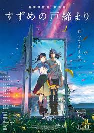
Suzume
Mijn rating: 8/10 Suzume vertelt het verhaal van een 17-jarig meisje dat een mysterieuze jongen ontmoet die magische deuren moet sluiten om grote rampen in Japan te voorkomen. Wanneer Suzume zelf bij één van die deuren betrokken raakt, besluit ze met hem mee te reizen. Samen proberen ze de deuren te sluiten voordat er verwoesting ontstaat. Tijdens deze reis wordt Suzume geconfronteerd met herinneringen aan een traumatische gebeurtenis uit haar jeugd en leert ze omgaan met verlies, terwijl er een speciale band ontstaat tussen haar en de jongen. Deze film zat vol met spannig en emotionele stukjes. Ik vind het echt een hele leuke film, ook hoe haar trauma wordt verwerkt.
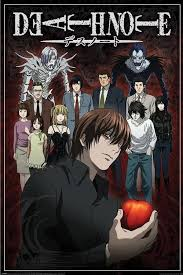
Death Note
Mijn rating: 10/10 Death Note volgt Light Yagami, een briljante scholier die een mysterieus notitieboek vindt waarmee hij iedereen kan laten sterven wiens naam hij erin schrijft. Light besluit het te gebruiken om misdadigers uit te schakelen en zo een perfecte wereld te creëren waarin hij als god heerst. Zijn daden trekken de aandacht van de geniale detective L, die vastbesloten is Kira, Lights bijnaam,te ontmaskeren. Het verhaal draait om een intens kat-en-muisspel vol strategie, psychologische spanning en morele vragen over gerechtigheid en macht. De manier hoe de death note werkt vind ik interessant, ook zit de anime vol met spannende stukjes. Hoe Kira de slechte uit deze wereld houd geeft hem ook een reden waarom hij het doet. Door deze dingen vind ik het juist een leuke anime.
More than a Married Couple but Not Lovers
Mijn rating: 9.5/10 More Than a Married Couple, But Not Lovers gaat over Jirō Yakuin, een introverte scholier die deelneemt aan een schoolprogramma waarin studenten in paarvorm “getrouwd” moeten acteren. In plaats van zijn crush Shiori wordt hij gekoppeld aan de energieke en populaire Akari Watanabe. Ze besluiten samen een deal te sluiten: ze gedragen zich als een perfect stel om punten te verdienen, terwijl ze later kunnen wisselen van partner. Naarmate ze meer tijd met elkaar doorbrengen, leren Jirō en Akari elkaar beter kennen en ontstaan er langzaam echte gevoelens. Tegelijkertijd spelen er andere romantische verwikkelingen, waardoor de grens tussen spel en werkelijkheid vervaagt. De serie combineert komedie, romantiek en schoolleven, met een focus op hoe vriendschap en gevoelens zich ontwikkelen in een ongebruikelijke situatie. De animatie is goed, het verhaal ook. Ik vind de relatie tussen Yakuin en Akari goed ontwikkelen. Het is een peak romance anime.
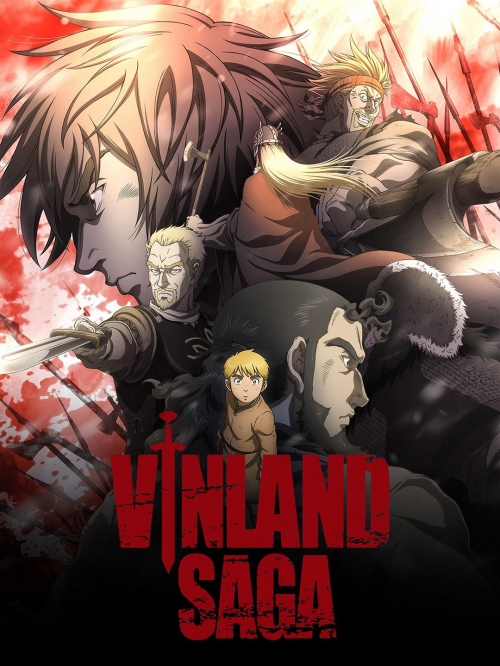